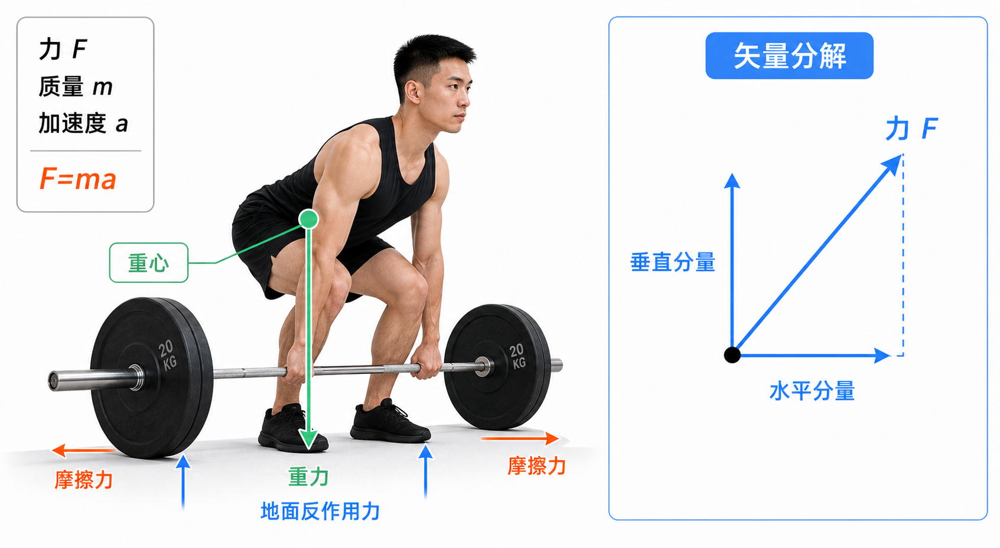

Day 15 · 生物力学基本概念与力
一句话总结
生物力学就是把训练动作翻译成物理语言: 力让身体加速或减速，方向决定力有没有用，摩擦让你抓得住站得稳，重心决定你会不会倒。从今天开始，看硬拉、深蹲、推举不要只看“肌肉酸不酸”，还要看“力往哪走”。

核心要点
-
力: 力是让物体加速、减速或改变方向的作用，训练里每次推拉都在制造力。
先抓结论: 力不是“感觉很用力”，而是能改变运动状态的东西。杠铃从地面被拉起来，是因为你给它向上的合力超过了重力。牛顿第二定律: F = m × a真实例子
字面意思
F 是力，m 是质量，a 是加速度。质量越大，要得到同样加速度，需要更大的力。
大白话
同样想把车推快，空车容易，满载货车难。杠铃越重，想让它动起来越费力。
训练判断
1RM 很重时，杠铃速度慢，不代表你没用力；可能是质量太大，同样输出只能产生很小加速度。
硬拉离地瞬间最难，是因为杠铃从静止变运动需要先克服重力并产生向上加速度。若身体位置差，力没有高效传到杠铃，主观感觉会更费劲。
常见误解❌以为动作越快就一定力量越大。✅其实速度还受重量、技术、疲劳和力的方向影响。轻重量快不等于最大力大，重重量慢也可能需要很大力。
-
标量与矢量: 标量只有大小，矢量有大小也有方向，力属于矢量。
底层机制概念 怎么记 训练例子 标量 只有多少，没有朝哪。 体重 70 kg、时间 30 秒、训练容量 3000 kg。 矢量 既有多少，也有方向。 力、速度、加速度、地面反作用力。 方向 方向错，力会打折。 划船时肘向后拉，背部更容易参与；耸肩乱拉，方向偏掉。 肌肉通过肌腱拉骨头，骨头绕关节转动。拉力方向和骨头、关节的位置关系，会决定它更像是在制造旋转、稳定关节，还是白白压迫关节。
真实例子臀桥顶端如果小腿几乎垂直地面，脚对地的力更容易转成髋伸展；脚放太远或太近，力的方向改变，腘绳肌或股四头肌参与感会变多。
常见误解❌以为“用力大”就够。✅其实考试和训练都要问方向。力是矢量，方向不对，目标肌不一定得到好刺激。
-
力的合成与分解: 多个力能合成一个结果，斜向力也能拆成水平和垂直分量。
先抓结论: 一条斜向箭头，可以拆成“向上多少”和“向前多少”。训练里你以为只是在向上举，其实常常同时有向前、向后、向内、向外的分量。真实例子
合成
多个力一起作用，最后看合力。拔河时两边反方向拉，谁的合力更大，绳子就往谁那边加速。
分解
斜向力可拆成互相垂直的分量。比如弹力带斜向拉手臂，既有向下分量，也有向侧方分量。
训练意义
你可以通过绳索高度、弹力带方向、身体角度，改变目标肌主要对抗哪条分量。
绳索夹胸如果滑轮略低，拉力有向上和向内分量，胸大肌下束与肩水平内收感觉会不同；面拉如果绳索高度合适，外旋和肩胛后缩更容易出现。
常见误解❌以为器械重量片标多少，目标肌就承受多少。✅其实目标肌承受的是和关节角度、力臂、绳索方向有关的有效分量。
-
摩擦力: 摩擦力阻止相对滑动，抓握、站稳、冲刺、深蹲都离不开它。
先抓结论: 摩擦力像鞋底和地面之间的“刹车片”。没有足够摩擦，再强的肌肉也很难把力传出去。
底层机制场景 摩擦力作用 训练含义 硬拉握杠 手和杠铃之间摩擦不足会打滑。 镁粉、握距、握法、握力训练都影响输出。 深蹲站稳 鞋底和地面摩擦让脚能向外“拧地”。 鞋底太滑会让膝轨迹和髋发力变差。 冲刺蹬地 脚向后扒地，地面对人产生向前反作用。 钉鞋、地面材质、身体前倾角都会影响加速。 摩擦力方向总是反对接触面之间的相对滑动趋势。你硬拉时脚想向前或向后滑，地面摩擦就给相反方向的力，让身体能把髋膝伸展力量传到杠铃。
常见误解❌以为摩擦力一定是阻碍。✅其实训练里摩擦常常是帮手，它让你抓得住、站得稳、蹬得出去。
-
重力与地面反作用力: 重力永远向地心，地面反作用力从接触点推回身体。
真实例子
重力
地球把身体和杠铃向下拉。杠铃越重，向下的重力越大，身体必须制造更大向上力。
地面反作用力
你用脚推地，地面反过来推你。跳跃、深蹲、硬拉都靠这股反作用把身体带起来。
身体感觉
“用脚蹬地”不是玄学，而是在用地面反作用力帮助髋膝伸展，把力传到身体和杠铃。
深蹲起立时，脚对地施加向下和略向外的力，地面给向上和相反方向的反作用。若脚跟离地，接触点变了，反作用线也变了，平衡会更难。
训练含义硬拉时想象“把地板踩走”常比“用手把杠铃拽起来”更有用，因为手只是连接杠铃，真正的大力来自腿髋对地面的推压和身体张力传递。
常见误解❌以为上肢动作就没有地面反作用力。✅站姿推举、站姿划船、农夫走都需要脚和地面稳定交换力。
-
重心与稳定: 重心落在支撑面内更稳，离支撑面边缘越近越容易失衡。
先抓结论: 稳不稳，不只看核心强不强，还看重心投影有没有落在脚、手或器械形成的支撑面里。
真实例子变量 更稳 更难 支撑面 站距略宽、双脚着地、双手支撑。 单脚站、窄站距、单手支撑。 重心高度 重心低，如深蹲底部保持可控。 重心高，如头顶推举走路。 重心投影 落在支撑面中央附近。 接近边缘，如箭步蹲身体过度前倾。 前蹲比高杠深蹲更要求躯干直立，因为杠铃在身体前方，重心系统改变。为了不往前倒，你需要更好的踝背屈、上背伸展和核心抗屈曲。
训练含义想增加稳定挑战，可以缩小支撑面、提高重心、改变负重位置；想让新手先学会发力，应先扩大支撑面、降低复杂度，让力线清楚。
常见误解❌以为不稳定表面一定更高级。✅其实不稳定会降低最大力输出。练力量时先要稳定，练平衡时才故意增加不稳定。
常见误区
❌很多人以为生物力学只是在背公式。✅其实公式是语言，真正目的是真动作里判断力的大小、方向、分量和稳定性。
❌很多人以为“重量一样，刺激一样”。✅其实绳索角度、身体角度、关节位置会改变有效分量，目标肌刺激可能完全不同。
❌很多人以为越不稳定越训练核心。✅其实过度不稳定会牺牲输出，力量训练和稳定训练目标不同。
记忆口诀
力看 F=ma，大小还看方向；斜力拆两边，合力定去向；摩擦帮你稳，重力往下拉；重心进支撑，动作不乱晃。
翻转卡复习
实操关联
- 增肌: 调绳索高度和身体角度时，先问目标肌要对抗哪条力的分量，不只看重量片数字。
- 减脂: 高疲劳循环训练后，摩擦和重心控制变差，动作选择要保留足够支撑面和安全余量。
- 爆发: 跳跃和冲刺看地面反作用力，重点是短时间把力准确传进地面，再拿到反作用。
- 耐力: 长时间跑步里每一步都受重力、地面反作用力和摩擦影响，技术经济性就是减少无效分量。
- 康复: 早期先用稳定支撑面和可控力线恢复信心，再逐步缩小支撑面或改变负重方向。
- 动作分析: 看到代偿时按“力大小→力方向→摩擦→重心→支撑面”排查，别只说某块肌肉弱。